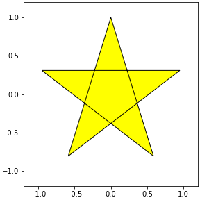
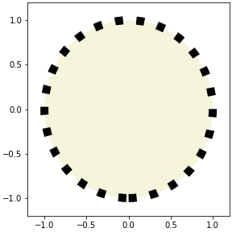

- 오늘은 매우 사소한 글입니다.
- Matplotlib에서 그려지는 선의 꼭지점과 끝점 표현입니다.
- 사소하지만 신경을 거스르는 일을 해결합시다.
1. motivation: Pie chart
다른 그림에 비해 자주 그리는 그림은 아닙니다.
그런 만큼 손에 익히기 쉽지 않은데, 정리를 한번 하겠습니다.
아보카도, 바나나, 체리 판매량이 각기 40, 70, 10이라고 하고,
상대적인 판매량을 그림으로 그린다고 칩시다.
1
2
3
4
5
6
7
8
9
10
11
12
13
14
15
16
17
18
19
20
21
22
23
24
25
26
27
28
29
30
31
32
33%matplotlib inline
import numpy as np
import matplotlib.pyplot as plt
# 판매량
data = [40, 70, 10]
# 레이블
labels = ["Abocado", "Banana", "Cherry"]
fig, axs = plt.subplots(ncols=3, figsize=(12, 4), constrained_layout=True)
# (A) 색과 글자 설정
axs[0].pie(data, labels=labels, labeldistance=0.7,
colors=["g", "y", "r"],
textprops={"color":"w", "fontsize":"14", "fontweight":"bold", "ha":"center"})
# (B) 부채꼴에 윤곽선 추가
axs[1].pie(data, labels=labels, labeldistance=0.7,
colors=["g", "y", "r"],
textprops={"color":"w", "fontsize":"14", "fontweight":"bold", "ha":"center"},
wedgeprops={"ec":"w"})
# (C) 부채꼴 윤곽선 두껍게
axs[2].pie(data, labels=labels, labeldistance=0.7,
colors=["g", "y", "r"],
textprops={"color":"w", "fontsize":"14", "fontweight":"bold", "ha":"center"},
wedgeprops={"ec":"w", "lw":6})
titles = ["(A)", "(B): (A) + wedgeprops", "(C): (B) + lw"]
for title, ax in zip(titles, axs):
ax.set_title(title, fontsize=16)
ax.set_aspect(1)colors매개변수로 색을 조정하고textprops매개변수로 글꼴만 좀 조정한 것이 (A)입니다.(B)는 부채꼴에 경계선을 넣어서 틈을 살짝 벌렸습니다.
wedgeprops를 사용합니다.만들고 보니 좀 두꺼우면 좋겠다는 생각이 듭니다.
wedgeprops에lw를 넣어 line width를 두껍게 했습니다.
- 그런데 cherry가 banana를 찌르고 있습니다.
- 사소하다면 사소한건데, 영 성가십니다.
- 원인을 파악하고 제거합시다.
2. 별 그리기
- 문제를 일반화하기 위해 별을 그리고 이 그림을 바꿔봅니다.
- 지난 글에서 다룬
Path와PathPatch를 사용합니다.
2.1. 별 만들기
오각형 기반으로 별을 만들겠습니다.
어릴 때부터 별을 그리라면 이렇게 그렸죠. :)
1
2
3
4
5
6
7from matplotlib.path import Path
from matplotlib.patches import PathPatch
xs = [np.cos(2*np.pi*x/5 + 0.5*np.pi) for x in range(5)]
ys = [np.sin(2*np.pi*x/5 + 0.5*np.pi) for x in range(5)]
ps = np.array(list(zip(xs, ys)))
ps실행 결과: 다섯 지점의 좌표를 만들었습니다.
1
2
3
4
5array([[ 6.12323400e-17, 1.00000000e+00],
[-9.51056516e-01, 3.09016994e-01],
[-5.87785252e-01, -8.09016994e-01],
[ 5.87785252e-01, -8.09016994e-01],
[ 9.51056516e-01, 3.09016994e-01]])이제 점따라 이어서 별을 그립니다.
어릴 때 그리던 그 순서대로 점 번호를 찍습니다.
마지막에 원점으로 돌아가는 것까지 잊지 말아야 합니다.
1
2ps_star = ps[[0,2,4,1,3,0]]
ps_star실행 결과: 순서대로 점이 배열됩니다.
1
2
3
4
5
6array([[ 6.12323400e-17, 1.00000000e+00],
[-5.87785252e-01, -8.09016994e-01],
[ 9.51056516e-01, 3.09016994e-01],
[-9.51056516e-01, 3.09016994e-01],
[ 5.87785252e-01, -8.09016994e-01],
[ 6.12323400e-17, 1.00000000e+00]])Path와PathPatch를 차례대로 적용해서 별을 그립니다.1
2
3
4
5
6
7path_star = Path(ps_star)
patch_star = PathPatch(path_star, fc="yellow", ec="k")
fig, ax = plt.subplots(figsize=(4, 4), constrained_layout=True)
ax.add_artist(patch_star)
ax.set_xlim(-1.2, 1.2)
ax.set_ylim(-1.2, 1.2)
맘에 듭니다.
선을 굵게 합시다. PathPatch에
lw매개변수를 추가합니다.1
2
3
4
5
6
7path_star = Path(ps_star)
patch_star = PathPatch(path_star, fc="yellow", ec="k", lw=10)
fig, ax = plt.subplots(figsize=(4, 4), constrained_layout=True)
ax.add_artist(patch_star)
ax.set_xlim(-1.2, 1.2)
ax.set_ylim(-1.2, 1.2)시작점이자 끝점인 맨 위가 부러진 듯 보입니다.
끝점(caps)과 중간점(joints) 표현 방식이 달라서 그렇습니다.
일단 저 끝점을 중간점으로 만들어서 일관성을 줍시다.
한 포인트 더 붙이면 됩니다.
1
2
3
4
5
6
7
8ps_star = ps[[0,2,4,1,3,0,2]] # 맨 마지막에 2 추가
path_star = Path(ps_star)
patch_star = PathPatch(path_star, fc="yellow", ec="k", lw=10)
fig, ax = plt.subplots(figsize=(4, 4), constrained_layout=True)
ax.add_artist(patch_star)
ax.set_xlim(-1.2, 1.2)
ax.set_ylim(-1.2, 1.2)
2.2. joinstyle
Matplotlib에서 꺾은선 그래프처럼 여러 선이 꺾이는 관절 표현은
joinstyle매개변수로 결정합니다.miter,round,bevel세 가지의 선택지가 있습니다.우리 별 그림에 이 셋을 적용합니다.
1
2
3
4
5
6
7
8
9joinstyles = ["miter", "round", "bevel"]
fig, axs = plt.subplots(ncols=3, figsize=(12, 4), constrained_layout=True)
for js, ax in zip(joinstyles, axs):
patch_star = PathPatch(path_star, fc="yellow", ec="k", lw=10, joinstyle=js)
ax.add_artist(patch_star)
ax.set_xlim(-1.2, 1.2)
ax.set_ylim(-1.2, 1.2)왼쪽부터 뾰족, 둥글, 판판입니다.
기본값은 뾰족한
miter로 각도가 작을수록 먼 곳까지 꼭지점이 연장된다는 특징이 있습니다.맨 위 pie chart 예제에서도 체리 판매량이 다른 둘보다 적어 꼭지점이 바나나를 찔렀습니다.
round나bevel을 사용하면 그럴 일이 없을 겁니다.
3. 원 그리기
- 이번에는 조금 다른 예제를 확인합니다.
- 시작과 끝이 동일한 원을 점선으로 표현해서 짧은 선을 많이 그립니다.
3.1. 원 만들기
- 이번엔
PathPatch말고Circle을 사용합니다. Circle로 원을 만들고add_artist()로 붙입니다.1
2
3
4
5
6
7
8from matplotlib.patches import Circle
circle = Circle((0, 0), 1, ls=":", fc="beige", ec="k", lw=10)
fig, ax = plt.subplots(figsize=(4, 4), constrained_layout=True)
ax.add_artist(circle)
ax.set_xlim(-1.2, 1.2)
ax.set_ylim(-1.2, 1.2)
3.2. joinstyle? capstyle!
별 그림과 똑같이 joinstyle을 적용합니다.
1
2
3
4
5
6
7fig, axs = plt.subplots(ncols=3, figsize=(12, 4), constrained_layout=True)
for j, ax in zip(joinstyles, axs):
circle = Circle((0, 0), 1, ls=":", fc="beige", ec="k", lw=10, joinstyle=j)
ax.add_artist(circle)
ax.set_xlim(-1.2, 1.2)
ax.set_ylim(-1.2, 1.2)별 그림과는 달리 변화가 없습니다.
joinstyle은 선이 꺾이는 부분에 적용되는 매개변수입니다.원은 꺾이는 점이 없고 점선도 꺾인 곳이 없기에 아무런 변화가 없습니다.
선 끝에는
capstyle이 적용됩니다.선택지는
joinstyle처럼 세 개지만 이름이 다릅니다.butt,round,projecting입니다.확인합니다.
1
2
3
4
5
6
7
8
9capstyles = ["butt", "round", "projecting"]
fig, axs = plt.subplots(ncols=3, figsize=(12, 4), constrained_layout=True)
for cs, ax in zip(capstyles, axs):
circle = Circle((0, 0), 1, ls=":", fc="beige", ec="k", lw=10, capstyle=cs)
ax.add_artist(circle)
ax.set_xlim(-1.2, 1.2)
ax.set_ylim(-1.2, 1.2)이제 차이가 보입니다.
joinstyle과 capstyle을 함께 표현합니다.
1
2
3
4
5
6
7
8
9
10
11
12
13fig, axs = plt.subplots(ncols=3, figsize=(12, 5), constrained_layout=True)
for js, cs, ax in zip(joinstyles, capstyles, axs):
circle = Circle((0, 0), 1, ls=":", fc="beige", ec="k", lw=10, capstyle=cs)
ax.add_artist(circle)
patch_star = PathPatch(path_star, fc="yellow", ec="r", lw=10, joinstyle=js)
ax.add_artist(patch_star)
ax.set_xlim(-1.2, 1.2)
ax.set_ylim(-1.2, 1.2)
ax.set_title(f"joinstyle= '{js}'\ncapstype= '{cs}'", pad=12, fontsize="xx-large")
ax.set_xticks([])
ax.set_yticks([])
ax.set_aspect(1)
4. 다시 Pie chart
애초 우리 목적은 Pie chart였습니다.
맨 위 코드에
joinstyle만round로 적용합니다.1
2
3
4
5
6
7
8
9
10data = [40, 70, 10]
labels = ["Abocado", "Banana", "Cherry"]
fig, ax = plt.subplots(figsize=(4, 4), constrained_layout=True)
ax.pie(data, labels=labels, labeldistance=0.7,
colors=["g", "y", "r"],
textprops={"color":"w", "fontsize":"14", "fontweight":"bold", "ha":"center"},
wedgeprops={"ec":"w", "lw":6, "joinstyle":"round"})
ax.set_aspect(1)짜잔. 이제 깔끔합니다.